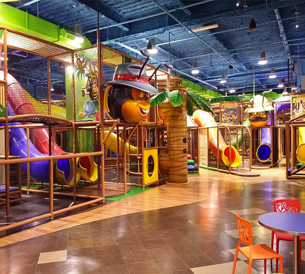
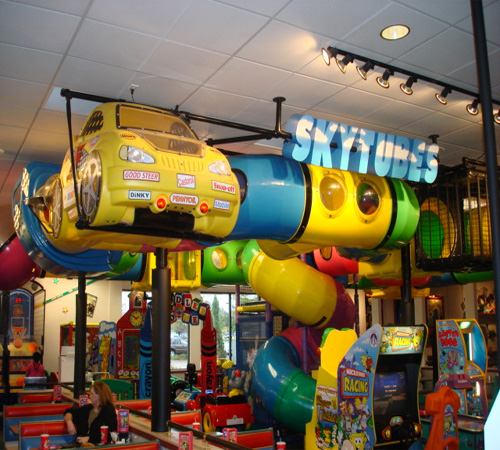
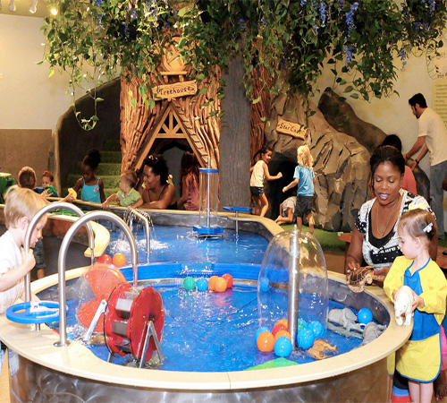

Playspaces are a way to create a rich, playful space for children in order to inspire them to play in more purposeful, meaningful ways. They should inspire children to learn through those play experiences and teach them how to value what they have.
Here are a few playspaces that you may find in your town:


